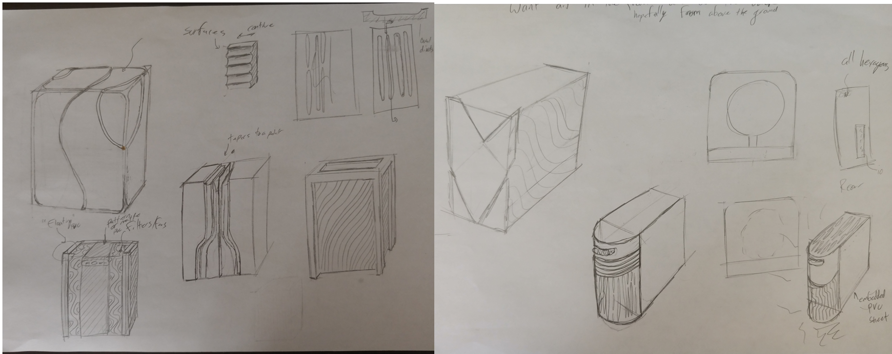
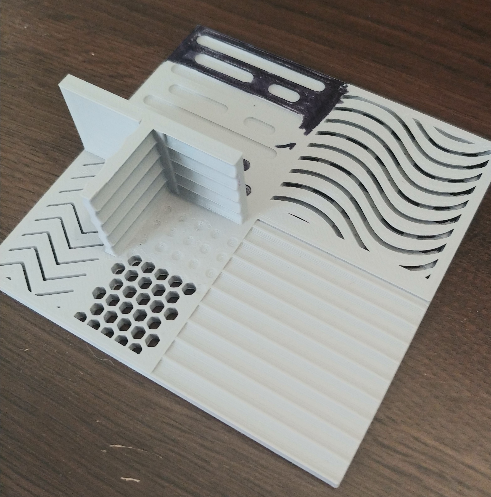
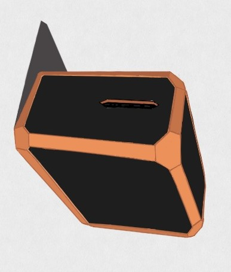
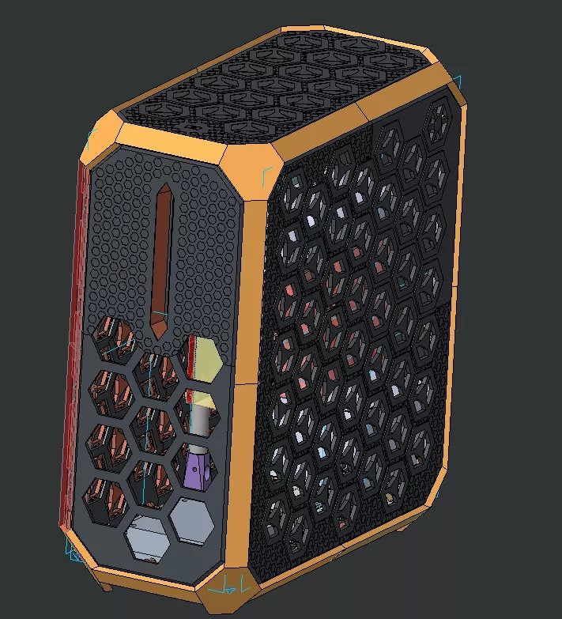
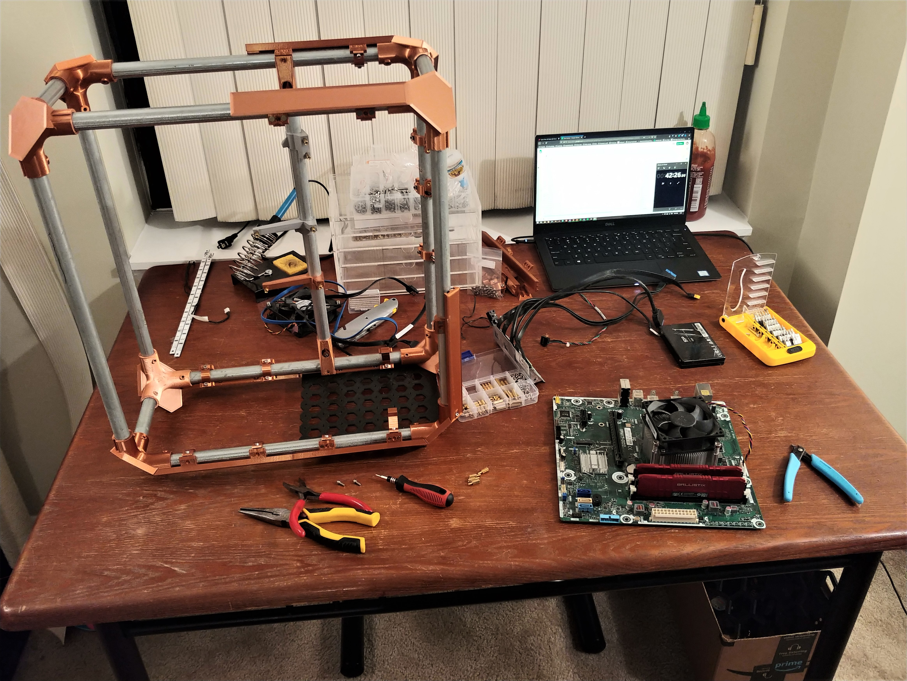
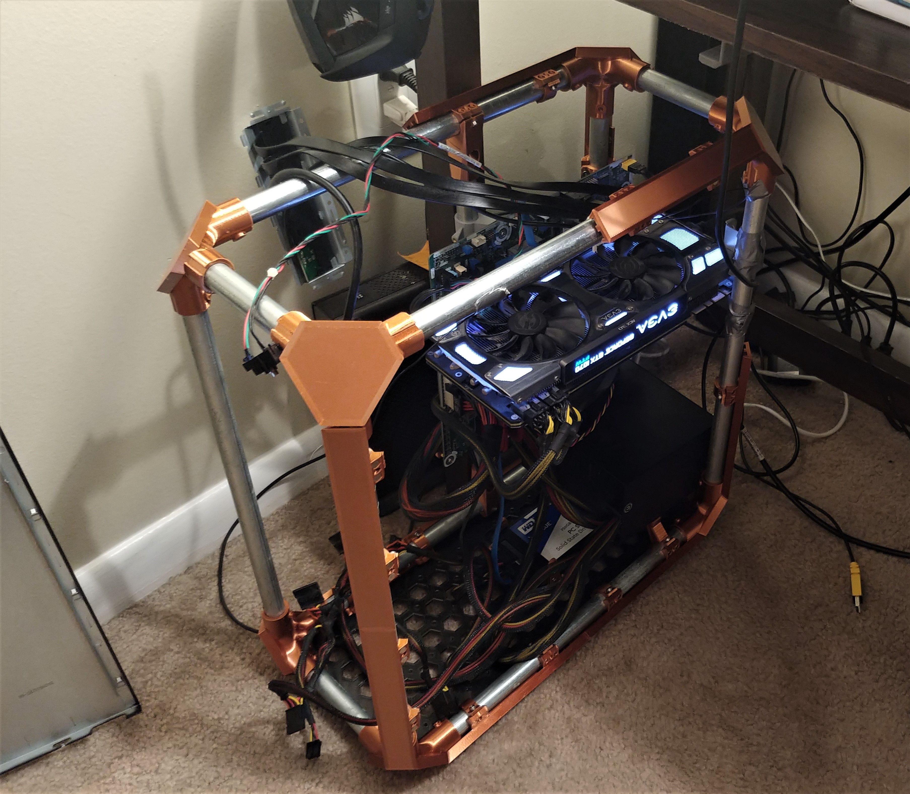
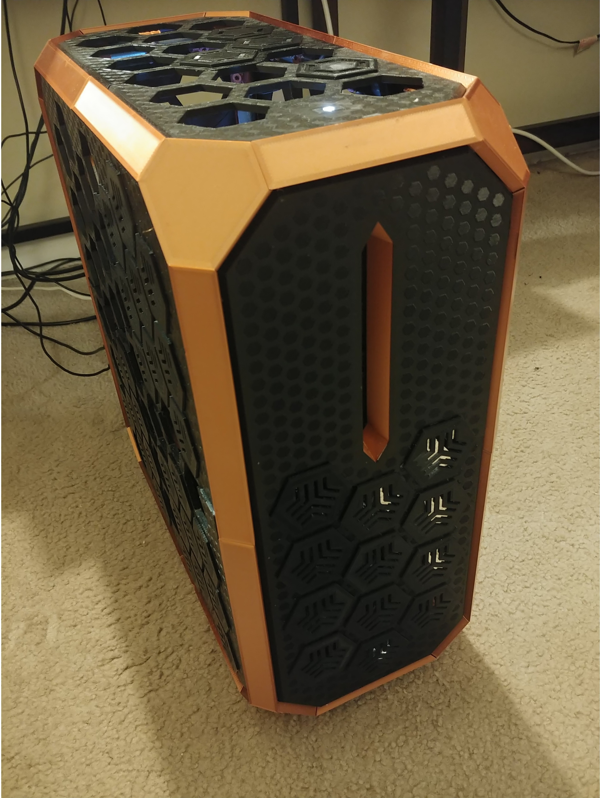

My computer case was too small.
I had gotten it from a friend a while back and was quickly running out of room as I upgraded. Instead of spending $60 on a new case with all the space in the world, I decided to 3D print one. Why spend so much time and effort on something like this? Good question; I'm not entirely sure either. My main goal was a modular case that would make future upgrades easy and give me complete control over airflow. It is also one of the largest assemblies I have made for personal use (200+ parts). At work, most of my design work is iterative or fits into a larger assembly, so I'm used to working within other people's skeleton models and parametric constraints, but I hadn't had to build them from scratch. All things considered, I'm quite pleased with both the finished case and the structure of the CAD model, and I'm glad I took this on.

For this case, I wanted to experiment with different forms and surface patterns. Although my printer is quite large, it can't produce the clean, perfectly flat surfaces that are standard on sheet-metal cases. Rather than fight it, I wanted to play to the printer's strengths and pattern the walls in a way that would be impossible with traditional manufacturing. The challenge was finding a pattern and overall shape that didn't look hideous and was easy to print.

I started with a test print of several patterns printed in different orientations. Most of the patterns masked small printing inconsistencies and made the parts look much better. However, they also add a lot of visual noise, so they need to be used judiciously.

After plenty of sketching, test prints, and filament research, I settled on a black and gold case with a hexagonal theme. The hexagons proved difficult to draw but easy to model, so I left them out of the final sketch and focused on form and color. I'm not a designer or an artist, but I've been working on it, and I think the sketch turned out well.

To pattern the walls, I printed them with the outside face down on the build plate. Plastic printed against my smooth build plate comes out glossy, but any small print defects are very visible on a surface like that. Continuing the hexagonal theme, I added tiny hexagonal indents across the walls. The indents are 0.3 mm deep, exactly one layer height on my printer, so small hexagonal holes appear in the first layer and disappear in the second. Because the second layer is solid, it prints over the whole part, bridging the gaps left in the first layer. A 0.3 mm gap is no problem for the printer, but since that second layer doesn't touch the build plate, it produces a different finish wherever there is an indent. It looks a bit hectic in CAD, but I love the effect in person, and it almost completely hides print imperfections. Each wall also had to be split into four parts to fit on the printer, and the texture makes those seams nearly invisible.
The hexagonal plugs attach to the walls with compliant cantilever arms. I designed them this way because I wanted a connection that was secure, easy to disassemble, and had an interference fit, so there would be no chance of an annoying rattle. The plugs also give me a great deal of control over airflow through the PC, and that modular, customizable airflow is the reason I trusted 3D printed materials for this job. As someone who once left a 3D printed part in a hot car, I am very aware of the glass transition temperature of thermoplastics. However, I was confident that with some testing I could tune the airflow to keep everything below the 40–50 °C limit.
Once everything was designed and printed, assembly was fairly uneventful. The parts are held together with embedded magnets or threaded inserts, so every connection is secure and easy to assemble and disassemble. I designed the case so that small dimensional variations wouldn't be noticeable or affect performance, and I'm proud to say I only had to reprint two pieces: one because of a filament issue, and one because I mismeasured the I/O ports. All in all, my wallet and I are very happy that nothing big needed reprinting and that everything came together on the first try.





A few hexagonal plugs still need to be printed, but my printer broke shortly after I finished the walls. I think it has earned a well-deserved break... at least until the replacement parts arrive.